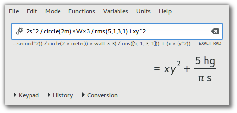

| |
Qalculate!
- the ultimate desktop calculator

Qalculate! is a multi-purpose desktop calculator for GNU/Linux (and Mac OS). It is small and simple to use but with much power and
versatility underneath. Features include customizable functions, units,
arbitrary precision, plotting, and a user-friendly interface (GTK+ and CLI).
This project welcomes new developers. Visit the project page here.
Latest News
.: 2016-06-15 :. Qalculate! version 0.9.8 released
After almost a decade of very little development, the project has been revived and during the last two months many improvements have been made, until it is now time to release a new version. Qalculate! version 0.9.8 includes many bug fixes, but due to limited testing some new bugs have probably been introduced. Any external applications using libqalculate need to be recompiled to function properly with the new version.
Changes:
- Lots of bug fixes and minor improvements
- Three different parsing modes can be chosen from (providing mainly different handling of implicit multiplication). The default 'adaptive' mode has been enhanced.
- By default prefixes will not be added to for example imperial units.
- Changed handling of degrees Celsius and Fahrenheit. Conversion will take place already during parsing.
- When converting to unit without prefix, no prefix will be added to the result unless the unit expression is prepended with '?' ('0' works in the opposite direction).
- Option to ignore commas in numbers (for use as thousands separator).
- Possibility to abort slow number printing without using crash prone thread cancellation (use Calculator::startPrintControl() and related functions).
- New function: fibonacci (Qalculate! can now tell you that the millionth fibonacci number is approximately 1,953282129 * 10^208987, although for obvious reasons the exact number cannot be displayed).
- New units: Hartree, Rydberg, Dalton (same as u).
- Physical constant have been updated with the CODATA values from 2014.
- Currencies have been updated to reflect the available data from ECB.
- Use ~/.local and ~/.conf to store configuration and definitions
- The GTK+ UI has been ported to GTK+ 3 and has been polished in the process.
- The convert dialog has been transformed into a tab page in the main window, with auto-selection of unit category and continuous conversion. (GTK+ UI)
- Less obtrusive display of errors and warnings. They are now shown as tooltips for an icon next to the expression entry. (GTK+ UI)
- Spinning animations show calculation/display activity and an icon in the expression entry halts the process, instead of a message dialog. (GTK+ UI)
- A tooltip for the result display will show the result in text format less open to interpretation. (GTK+ UI)
- Automatic ondemand updates of exchanges rates (GTK+ UI)
- Better resizing of main windows. Tabs will be resized instead of result display and keypad view will remember size independently of the history view. (GTK+ UI)
- 'to' can now not only be used for conversion to unit expressions. "to bin", "to oct", "to hex" and "to bases" changes number base displayed, "to factors" factorizes, "to fraction" displays as fraction, and "to base" and "to optimal" auto-converts units. (CLI and GTK+ UI)
- The KDE UI has been abandoned for now and is not included in this release.
| |